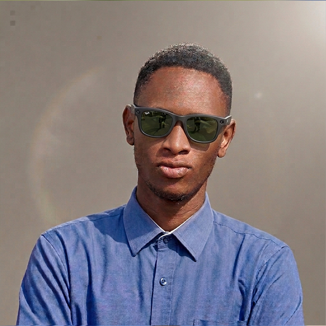

Kigali, Rwanda
+250 783 134 0384 209
nziza@hotmail.org
nziza.linkedin-portfolio.com

Hardworking and adaptable Graphic Designer and Visual Content
Creator with a background in Computer Networking and multimedia
production. Demonstrates a strong drive to master new visual tools,
refine design workflows, and deliver impactful branding assets.
Experienced across graphic design, professional photography,
video editing, and digital data systems, with a proven ability
to collaborate effectively in fast-paced environments.
Advanced Level Certificate (A2) in Computer Networking
- Lycée de
APADE — Graduation: 2020
Graphic Designer | EV Car Chinese Automotive — Kicukiro
Jan 2026 – Present